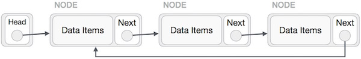
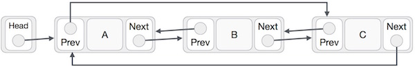

Circular Linked List is a variation of Linked list in which first element points to last element and last element points to first element. Both Singly Linked List and Doubly Linked List can be made into as circular linked list.
In singly linked list, the next pointer of the last node points to the first node.
In doubly linked list, the next pointer of the last node points to the first node and the previous pointer of the first node points to the last node making the circular in both directions.
As per above shown illustrations, following are the important points to be considered.
Last Link's next points to first link of the list in both cases of singly as well as doubly linked list.
First Link's prev points to the last of the list in case of doubly linked list.
Following are the important operations supported by a circular list.
insert − insert an element in the start of the list.
delete − insert an element from the start of the list.
display − display the list.
Following code demonstrate insertion operation at in a circular linked list based on single linked list.
//insert link at the first location
void insertFirst(int key, int data) {
//create a link
struct node *link = (struct node*) malloc(sizeof(struct node));
link->key = key;
link->data= data;
if (isEmpty()) {
head = link;
head->next = head;
}else {
//point it to old first node
link->next = head;
//point first to new first node
head = link;
}
}
Following code demonstrate deletion operation at in a circular linked list based on single linked list.
//delete first item
struct node * deleteFirst() {
//save reference to first link
struct node *tempLink = head;
if(head->next == head){
head = NULL;
return tempLink;
}
//mark next to first link as first
head = head->next;
//return the deleted link
return tempLink;
}
Following code demonstrate display list operation in a circular linked list.
//display the list
void printList() {
struct node *ptr = head;
printf("\n[ ");
//start from the beginning
if(head != NULL) {
while(ptr->next != ptr) {
printf("(%d,%d) ",ptr->key,ptr->data);
ptr = ptr->next;
}
}
printf(" ]");
}
To see its implementation in C programming language, please click here.